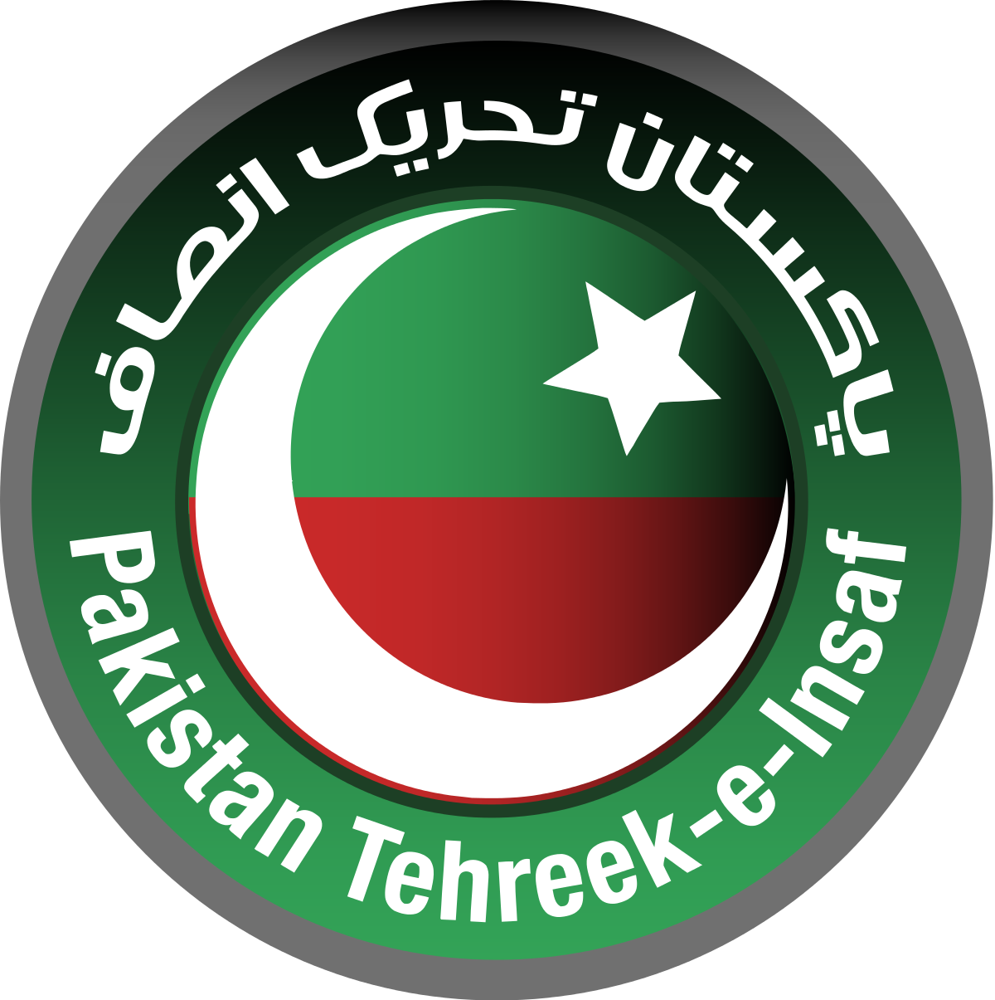
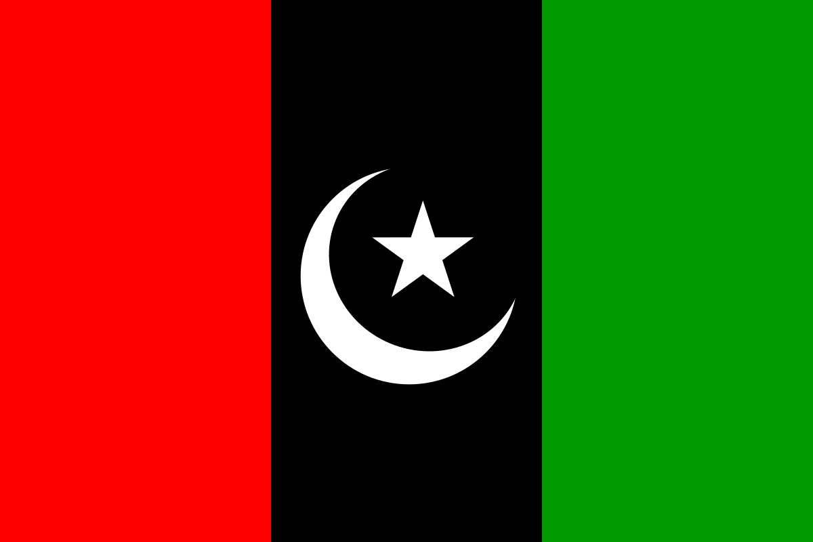
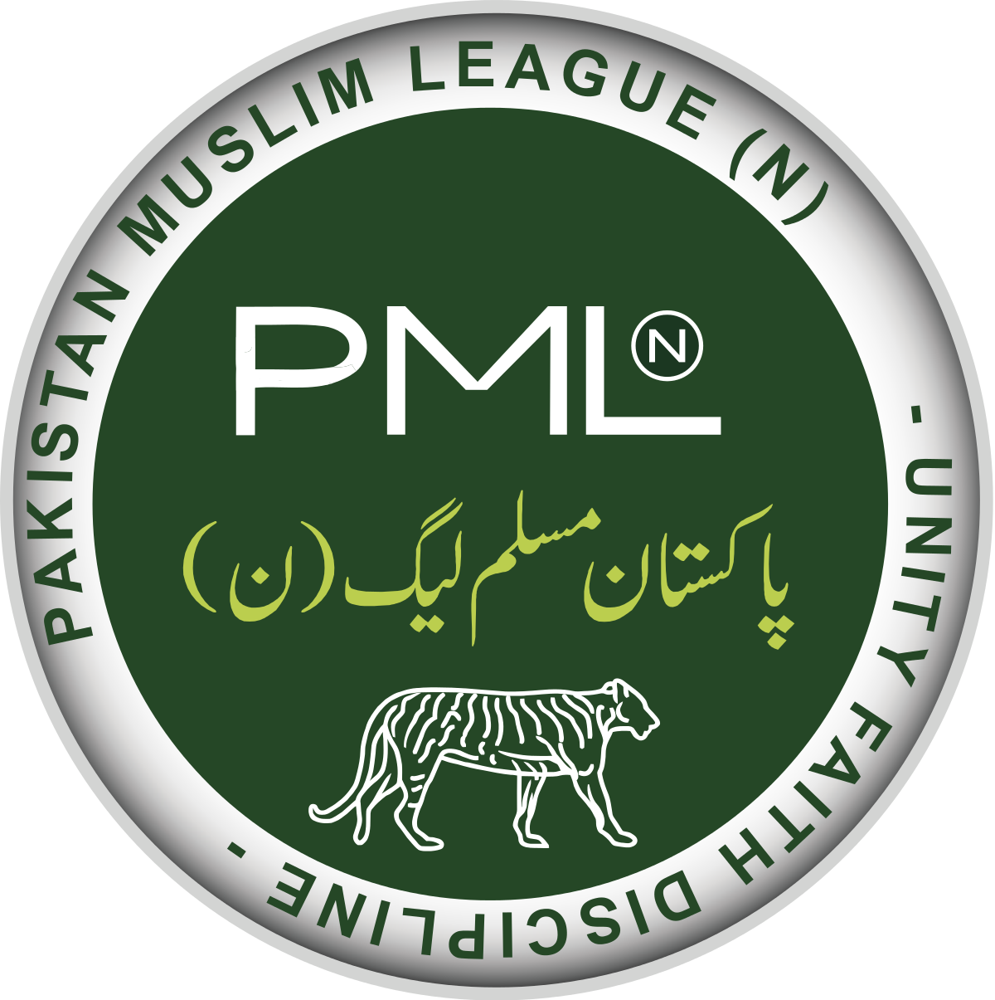

| Party Symbol |
Party Name |
Party History |
|  |
Pakistan Tehreek-e-Insaf اکستان تحريکِ انصاف |
Pakistan Tehreek-e-Insaf was founded by Imran Khan on 25 April 1996 in Lahore. Founded initially as a sociopolitical movement, in June 1996 the first Central Executive Committee of Pakistan Tehreek-e-Insaf was formed under the leadership of Imran Khan, including Naeemul Haque, Ahsan Rasheed, Hafeez Khan, Mowahid Hussain, Mahmood Awan and Nausherwan Burki as founding members. PTI began to grow slowly but did not achieve immediate popularity. |
 |
Pakistan People Parties پاکستان پیپلز پارٹی |
The Pakistan Peoples Party (PPP) was launched at its founding convention held in Lahore on 30 November and 1 December 1967. At the same meeting, Zulfiqar Ali Bhutto was elected as its chairman. Among the expressed goals of the party were the establishment of an "egalitarian democracy" and the "application of socialistic ideas to realize economic and social justice". A more immediate task was the struggle against the dictatorship of General Ayub Khan, who was at the height of his power when the PPP was formed. |
|  |
Pakistan Muslim League Nawaz پاکستان مسلم لیگ (ن |
The Pakistani Muslim League (Nawaz) (Urdu: پاکستان مسلم لیگ (ن), romanized: Pākistān Muslam Lig (Nūn) abbr. PML(N) or PML-N) is a centre-right, conservative political party in Pakistan. Alongside the Pakistan Tehreek-e-Insaf (PTI) and Pakistan Peoples Party (PPP), it is one of the three major political parties of the country. The party was founded by former Prime Minister Nawaz Sharif after the dissolution of Islamic Democratic Alliance in 1993. The party's platform is generally conservative, which involves supporting free markets, deregulation,lower taxes and private ownership. Although the party historically supported social conservatism, in recent years, the party’s political ideology and platform has become more liberal on social and cultural issues.
One of several continuing factions of the original Muslim League,the seeds of the party were sown following the 1985 Elections when the Prime Minister of Pakistan Muhammad Khan Junejo organised the supporters of President Zia-ul-Haq's dictatorship into a single party, known as the Pakistan Muslim League. After President Zia's death in 1988, under the leadership of Fida Mohammad Khan, a large faction split away from the Junejo-led Pakistan Muslim League, and formed a conservative alliance with various right-wing and Islamist political parties, called the Islamic Democratic Alliance. The alliance formed a government in 1990 under the leadership of Nawaz Sharif.
In 1993, the alliance dissolved and the party assumed its current shape, branding itself as the "Nawaz" faction of the Pakistan Muslim League, in contrast to the "Junejo" faction.After its foundation, the PML-N, along with the People's Party, dominated the two-party political system of Pakistan. However, after the 1999 coup, the party was eclipsed by its own splinter faction, the Musharraf - backed Pakistan Muslim League (Quaid), for almost a decade. PML-N regained popularity in the 2008 general elections, when it was elected as the principal opposition party. It returned to power following the elections of 2013, with Sharif elected as the Prime Minister for an unprecedented third term. The party however faced a major setback following the disqualification of Prime Minister Sharif in 2017. The situation was further made worse when Sharif and his daughter Maryam were sentenced to imprisonment on charges of corruption.
The party lost both the centre and the provincial government of its stonghold Punjab,[17] to PTI in 2018 elections. As of 2020, it is the main opposition party in the Parliament under the leadership of Sharif's younger brother Shehbaz.
|
 |
Jamaat-e-Islami Pakistan جمیعت علمائے اسلام |
Jamaat-e-Islami's founder and leader until 1972, was Abul A'la Maududi, a widely read Islamist philosopher and political commentator, who wrote about the role of Islam in South Asia.[18] His thought was influenced by many factors including the Khilafat Movement; Mustafa Kemal Atatürk's ascension at the end of the Ottoman Caliphate; and the impact of Indian Nationalism, the Indian National Congress and Hinduism on Muslims in India. He supported what he called "Islamization from above", through an Islamic state in which sovereignty would be exercised in the name of Allah and Islamic law (sharia) would be implemented. Mawdudi believed politics was "an integral, inseparable part of the Islamic faith, and that the Islamic state that Muslim political action seeks to build" would not only be an act of piety but would also solve the many (seemingly non-religious) social and economic problems that Muslims faced.
Jamaat-e-Islami Headquarter in Lahore
Maududi opposed British rule but also opposed the Muslim nationalist movement (nationalism being un-Islamic) and their plan for a circumscribed "Muslim state". Maududi agitating instead for an "Islamic state" covering the whole of India[18]—this despite the fact Muslims made up only about one quarter of India's population.
Jamaat-e-Islami thus actively opposed the partition of India, with its leader Maulana Abul A'la Maududi arguing that concept violated the Islamic doctrine of the ummah. The Jamaat-e-Islami saw the partition as creating a temporal border that would divide Muslims from one another.
|
 |
Awami National Party عوامی نيشنل پارٹی |
Khan Abdul Wali Khan's political career had been built on the tradition of intense Pashtun nationalism inherited from his father, Khan Abdul Ghaffar Khan (Bacha Khan). Although it was formed after the partition of India, most of its leaders had favoured a united India, and had opposed the partition of India and the creation of Pakistan.[6] Most of the leaders were Indian National Congress right hands before the partition of India. Both men were opposed to the creation of Pakistan, and after the creation of Pakistan in 1947, they were imprisoned. In 1956 Wali Khan joined the National Awami Party (NAP), led by a charismatic Bengali socialist, Abdul Hamid Khan Bhashani. In 1965 the NAP split into two factions, with Wali Khan becoming president of the pro-Moscow faction.[7] The party's members participated in 1970 parliamentary elections through the Pakistan Peoples Party's platform and the National Awami Party, forming a largest socialist alliance with Zulfikar Ali Bhutto in 1970. However, the alliance fell apart and its members joined the Pakistan National Alliance.
In 1972 the party was strong enough to form coalition provincial governments, with its partner the Jamiat Ulema-e-Islam (JUI) in Khyber Pakhtunkhwa and Balochistan. These governments were short lived. Wali Khan was again jailed, and his party was barred from politics when the Supreme Court upheld the finding of President Bhutto that the NAP was conspiring against the state of Pakistan. General Zia-ul-Haq subsequently withdrew the charges against the NAP. Wali Khan was released, joined the National Democratic Party, and ultimately formed the Awami National Party. In the meantime, Prime Minister Bhutto was imprisoned and executed in April 1979.
|